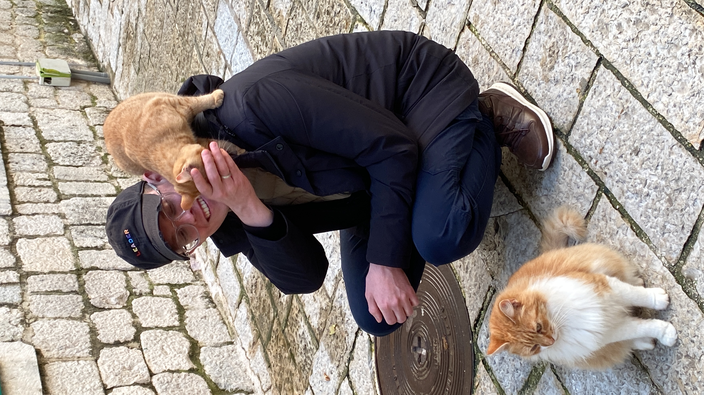
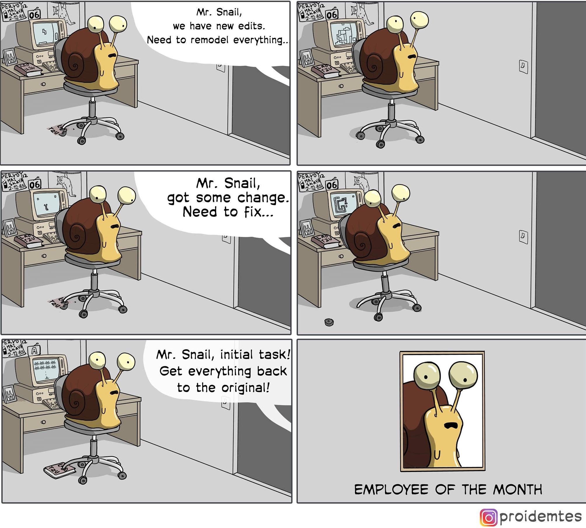

User Manual for Ilya Dubovik

Overview
- 🇩🇪 Place: Berlin, Deutschland
- 👨🏼💻 Profession: Software developer (front-end)
- 🦉 Chronotype: Night Owl
- 🥣 I Like: speed (cars), wrestling (sport), stand-up (comedy), soup (food)
I Work Best
I prefer to work from home and sometimes visit an office. If I needed to choose only one approach: I would choose remote work. Office environment could be distracting for me.
I mostly work between 12:00 and 20:00
I understand the reason why we are doing a task and the task should not be abstracted.
I know where all tools and documentations for my work at.
I work on one task at the moment.
I work with 2 monitors. It helps me to be more productive. They don't need to be big, for instance, right now I'm working with Macbook and additional 16" monitor from Arzopa.
When I'm working I close all chats and listen to Pink, Brown noise or 40 Hz Gamma Waves. If you see me with headphones, it means I'm focused and prefer not to be disturbed. Just send me a message and I will answer you in while.
Communication
I prefer asynchronous communication channels. Before you call me, please consider to send me a message.
I prefer to turn on my camera during calls. I would appreciate if you turn on your camera too.
My mothers language is Russian, when I speak English I may be direct, that may look rude. Please, don't take it personally. I'm trying to improve my English skills.
I'm not good in small talk, probably I'll be quite.
I don't have any work-related communication tools on my personal phone.
My emotions can be quite strong, but they never stay with me for long.
How To Help Me
I have ADHD and interactions could be a problem for me. From another point of view, my hyperfocus helps me to work on a task for a long time.
Please, don't expect me to join on "five minute call right now". For me, it's better to plan meetings.
I have a pour sense of time. Small tasks with deadline work great for me. Please help me set deadlines and priorities.
I'm a visual person. If we can draw our thoughts or ideas, let's do it! I use Excalidraw
Stop me if I dive too much into details.
I have trouble staying focused during long calls. Let's make them short and discuss the important thing from the beginning. Another approach, we can take a break to summarise what we have achieved.
Give me feedback regularly. It can be a slack message or a one-on-one meeting. Give me an example of my
action and how you would like me to action instead.
Don't forget to compliment me if I'm doing right
☺️
I Value
Openness. I love sharing experiences and openly learning from others.
Honestly. I'm always honest with the people around me.
Reliability. I may make mistake, like misjudging deadlines, but always do my best to achieve our goals.
Time. We all have limited time. Let's use it wisely.
A Little Bit More About Me
I'm pedantic and consistent.
I enjoy solving problems, especially complex ones.
Lunch is very important time for me.
I like to hear any story from you.
I feel things deeply and try to help others around me.
My Books Recommendation
- 📙Epistulae Morales ad Lucilium
- 📘The Discovery of Slowness
- 📘Monday Begins on Saturday (I can recommend any book from Arkady and Boris Strugatsky)
- 📗The Invisible Gorilla
- 📗Domain-driven Design
One Meme
